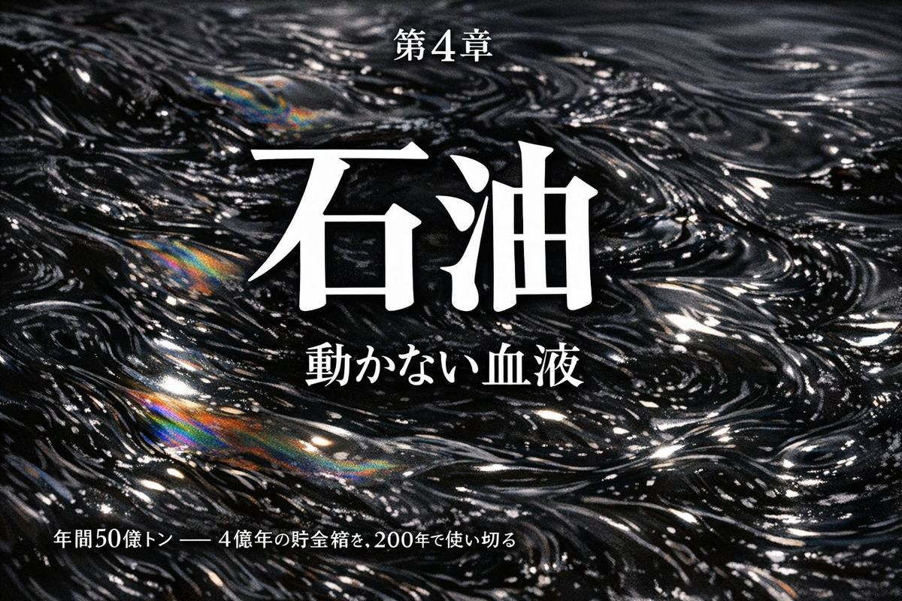
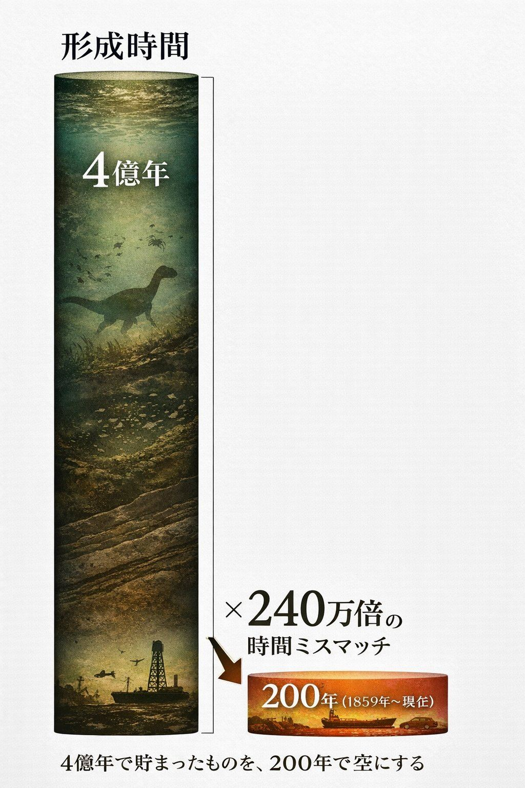
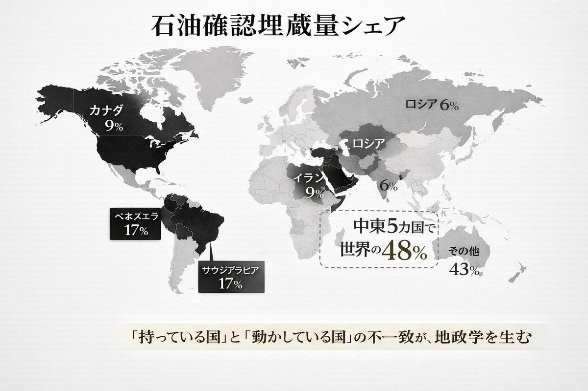
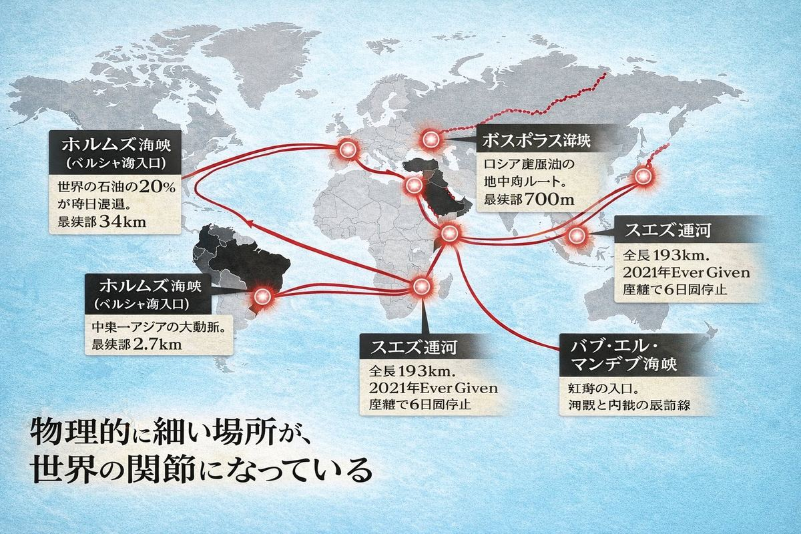
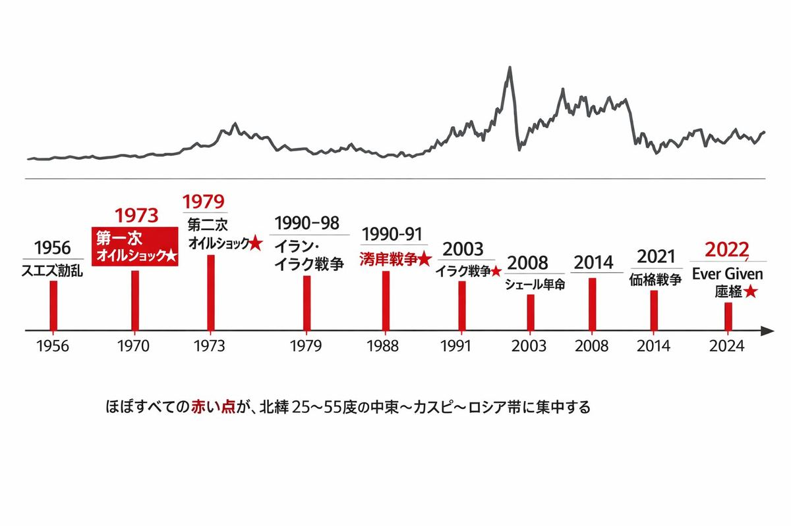
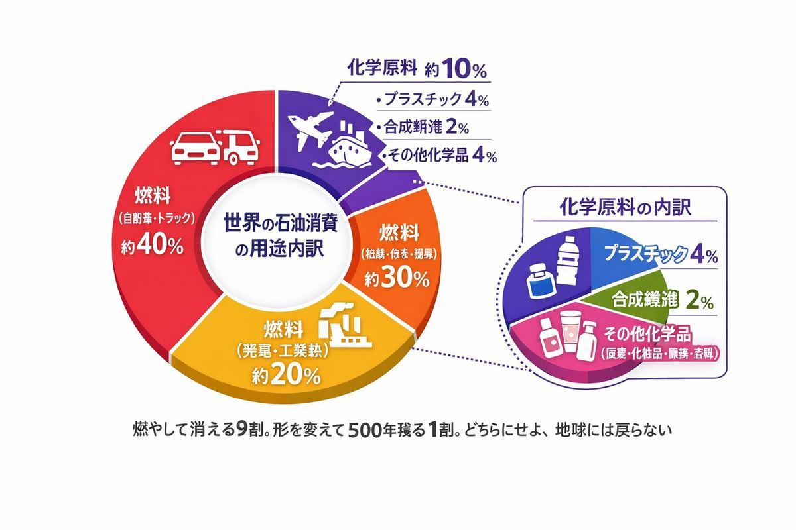
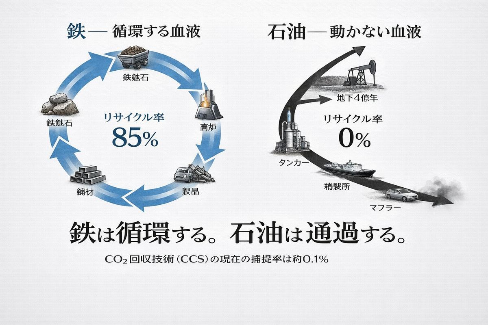
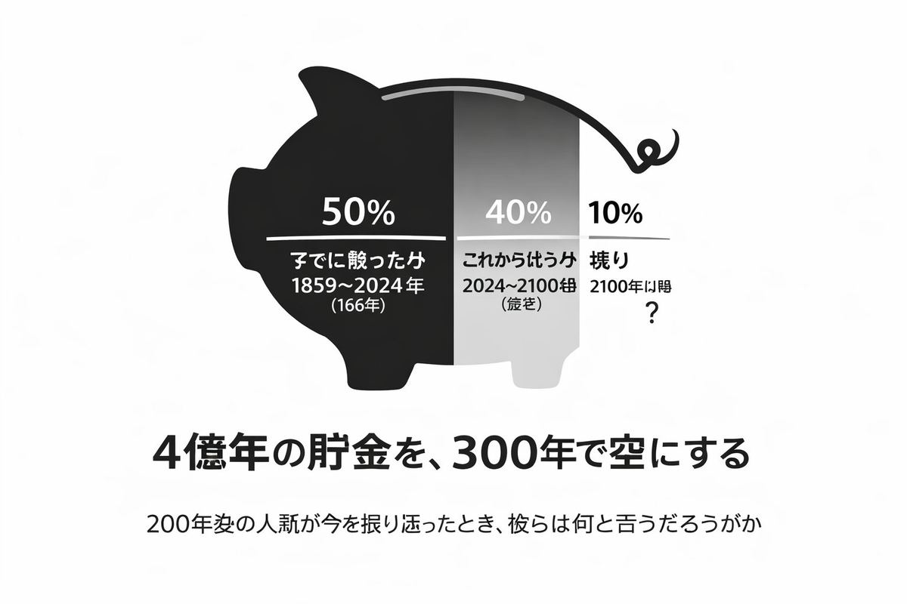

文明とは、運ぶことを覚えた野蛮である。 ── 出典不明（だが、石油の歴史によく似合う）
A. 金 B. 半導体 C. 石油
正解はC。
1973年の第一次オイルショック。1979年の第二次オイルショック。1980年からのイラン・イラク戦争。1990年の湾岸戦争。2003年のイラク戦争。2008年のシェール革命。2014年からの価格戦争。2021年のスエズ座礁事故。2022年のロシアのウクライナ侵攻と対露制裁。
これらの事件にはすべて、ひとつの共通項がある。震源地が石油だ。
ニュースで「中東情勢」「原油価格」「OPEC」「ガソリン代」と聞いた回数を、人類は他のどの単語よりも多く記録している。50年間ずっと、世界はこの黒い液体を中心に回っていた。

石油は、古生代から中生代にかけて海や湖に堆積したプランクトンや藻類の死骸が、地層の中で熱と圧力を浴びて変成したものだ。原料が貯まるまでに、4億年。
人類がこれを掘り始めたのは、1859年。アメリカのペンシルベニア州タイタスビルで、エドウィン・ドレークが世界で初めて石油井戸を掘った日が起点になる。それから166年。
4億年で貯まったものの約半分を、人類は166年で燃やした。残り半分も、おそらく今世紀中に半分以上が消える。
時間スケールの比率は、約240万倍。プラスチックの「使用15分・存在500年」が時間的ミスマッチだとしたら、石油は「貯蓄4億年・消費200年」という、もっと巨大なミスマッチの上に成り立っている。

石油の埋蔵量は、地球上にきわめて偏って分布している。
| 国 | 確認埋蔵量シェア |
|---|---|
| ベネズエラ | 約17% |
| サウジアラビア | 約17% |
| イラン | 約9% |
| カナダ | 約9% |
| イラク | 約8% |
上位5カ国で約60%。中東に絞ると5カ国（サウジ、イラン、イラク、UAE、クウェート）で世界の約48%を占める。
ただし「埋蔵量」と「実際に汲み上げられている量」は別物だ。生産量で見ると、アメリカ・サウジアラビア・ロシアの3カ国で世界の約40%以上を握る。アメリカはシェール革命以降、自国生産だけで国内消費を賄える数少ない大国になった。
埋蔵量と生産量のズレが、地政学のすべてを生む。「持っている国」と「動かしている国」が違うとき、人は争う。

地球儀を回してみる。石油の流れは、いくつかの「細い場所」を必ず通過する。
ホルムズ海峡。 ペルシャ湾の入り口。最も狭い部分で幅約34km。世界で消費される石油の約20%、LNGの約30%がここを毎日通る。一隻でも沈めば、世界経済が止まる。だからこの海峡は、過去40年間ずっと米国第5艦隊の監視下にある。
マラッカ海峡。 マレー半島とスマトラ島の間。中東からアジアへ向かう石油の大半がここを通る。最狭部は約2.7km。中国が「マラッカ・ジレンマ」と呼んで警戒し続け、別ルートのパイプラインや港湾投資を中央アジア・パキスタン・ミャンマーで進めている理由はここにある。
スエズ運河。 紅海と地中海を結ぶ全長193kmの人工水路。1956年のスエズ動乱でエジプトが国有化を強行し、英仏イスラエルが軍事介入した。2021年、コンテナ船 Ever Given がここで座礁し、6日間世界貿易が停止した。
ボスポラス海峡。 ロシアのカスピ海産原油が地中海に出る唯一のルート。最狭部約700メートル。トルコの裁量ひとつで止まる。
ダーダネルス・バブ・エル・マンデブ・パナマ運河。 列挙すればきりがない。
世界経済とは、これらの「細い場所」を石油が通過し続ける限りにおいて、回っている。物理的に細い場所が、世界の関節になっている。

過去70年間、石油をめぐって起きた主要な危機を並べてみる。
| 年 | 出来事 | 結果 |
|---|---|---|
| 1956 | スエズ動乱 | スエズ運河が一時閉鎖、欧州にガソリン配給制 |
| 1973 | 第一次オイルショック | アラブ諸国が対イスラエル支持国に禁輸、原油価格4倍 |
| 1979 | 第二次オイルショック | イラン革命でイラン産原油停止、再び価格高騰 |
| 1980-88 | イラン・イラク戦争 | 8年間ペルシャ湾で原油タンカー攻撃 |
| 1990-91 | 湾岸戦争 | イラクのクウェート侵攻、油田火災 |
| 2003 | イラク戦争 | イラクの石油生産崩壊 |
| 2008 | シェール革命 | 米国が世界最大の産油国に再浮上 |
| 2014-16 | サウジ vs シェール価格戦争 | 原油価格半減 |
| 2021 | Ever Given スエズ座礁 | 6日間世界貿易停止 |
| 2022 | ロシアのウクライナ侵攻 | 対露制裁、欧州エネルギー危機 |
これらを世界地図にプロットすると、ほぼすべての赤い点が、北緯25度から55度の帯に集中する。中東、カスピ海、ロシア、地中海。
歴史の教科書は「冷戦」「テロ」「中東和平」を別々の章で語る。しかし石油という補助線を引いた瞬間、それらは一本の線でつながる。20世紀後半から21世紀前半の国際政治は、ほとんどが石油の物語だった。

石油の話をすると、多くの人がガソリンと飛行機を思い浮かべる。実際、世界の石油消費の約90%は、ガソリン・軽油・ジェット燃料・船舶用重油・暖房油として燃やされる。
しかし残り約10%は、まったく違う運命をたどる。化学原料になる。
プラスチック、合成繊維、タイヤ、塗料、接着剤、化粧品、シャンプー、洗剤、薬品、農薬、肥料、アスファルト、ロウソク、口紅、コンタクトレンズ。これらすべての出発点に石油がある。
ポリエステルのシャツを着て、ナイロンのストッキングを履き、リップクリームを塗り、コンタクトをつけ、アスファルトの道路を歩き、合成ゴムのタイヤがついた自転車に乗る。あなたは1日に何十回、形を変えた石油に触れている。
つまり石油は、燃料9割・素材1割のハイブリッド資源だ。燃える9割は煙になって消え、残る1割はプラスチックとして500年残る。どちらにせよ、地球には戻らない。

血液という言葉は、循環するから血液と呼ばれる。心臓から動脈、毛細血管、静脈、そして心臓へ。この循環が止まれば、生命も止まる。
石油は、よく「現代文明の血液」と呼ばれる。動脈はパイプライン、静脈はタンカー、心臓は精製所。たしかに見た目は血液だ。地下から運ばれ、燃やされ、世界を動かす。
しかし、根本的な違いがある。石油は循環しない。
地下で4億年間動かなかったものを、人類は汲み上げて、燃やして、大気に放出する。一度燃やしたガソリンは、もう石油には戻らない。CO₂は大気に拡散し、海に溶け、植物に吸収され、何百年もかけてゆっくり別の場所に分散していく。
鉄は85%が循環する。アルミは75%。ガラスは70%。砂は理屈の上では掘り戻せる。プラスチックは砕けても物質としては残る。
石油だけが、燃やした瞬間に「素材」を終える。リサイクル率0%。回収技術（CCS: 二酸化炭素回収・貯留）は存在するが、商業規模で稼働しているのは世界で40件程度。年間4,000万トンを捕捉できる。世界のCO₂排出量は年間約370億トン。捕捉率0.1%。
ほぼ何も戻せていない。
これが「動かない血液」の意味だ。動いて見えるのは、人類がそれを地下から取り出して燃やしているからだ。本来この液体は、4億年間ずっと地下で静かに眠っていた。

最後にもう一つだけ数字を出す。
世界の石油確認埋蔵量を現在の生産ペースで割ると、可採年数は約50年と試算される。新規発見と技術革新でこの数字は毎年延びてきたが、それでも100年の壁は超えていない。
人類が石油を本格的に使い始めて166年。残りはおそらく50〜100年。合計しても300年に届かない。4億年の貯金を、300年で空にする。
200年後の人類が今を振り返ったとき、おそらく彼らはこう言う。「20世紀から21世紀の人類は、地球の最も貴重な貯金を、たった数世代で燃やし尽くした世代だ。」
その数世代の中に、私たちがいる。